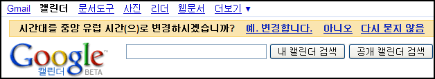

구글 캘린더의 깜찍한 시간대 이동

이태리 출장와서 구글 캘린더를 켜는 순간에 구글의 깜찍한 센스에 놀랬다. ip 를 가지고 조사를 했는지, 내가 시간대를 이동했다는 걸 감지하고 위와 같은 메시지를 보여준다. 그리고 시간을 바꿔보았더니, 출장온 이태리와 같은 '로마' 의 시간대를 선택해주었다. 어떻게 이 시간대인지를 알았을까... 그냥 자바스크립트로 시각을 체크했을까, 아니면 ip? 혹은 isp? 조사해보고 싶지만 피곤하다 ㅋㅋ 여튼 구글의 센스가 멋지다~